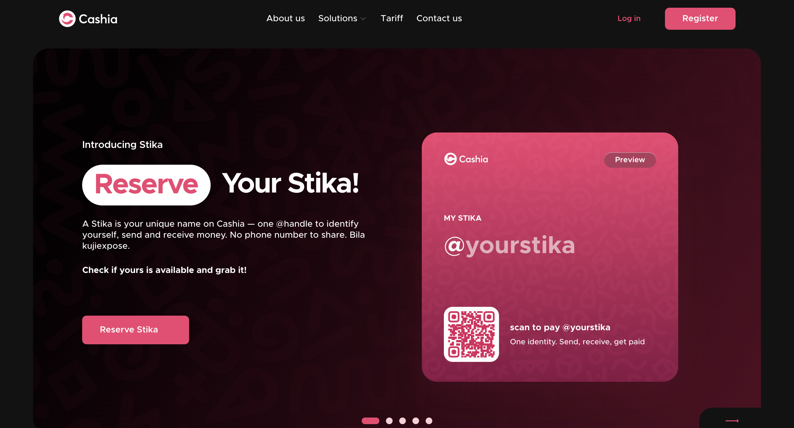
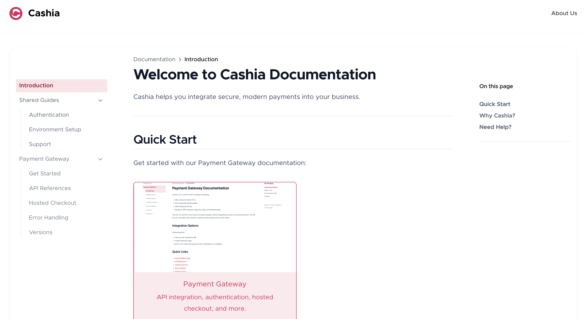
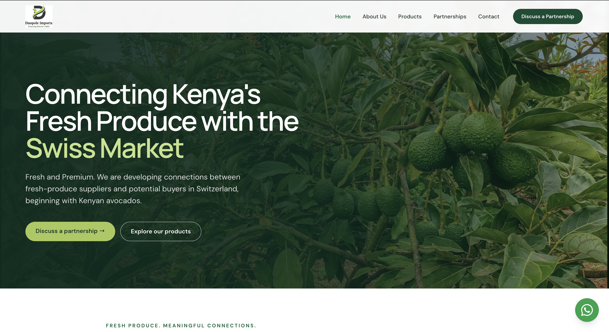

CASHIA
A fintech platform for digital financial services and payments. QA work covered web and mobile journeys, API validation, regression testing, and release confidence.
Senior QA Automation Engineer ·
Abubakar Towfiq
I build scalable automation solutions, validate complex systems, and help engineering teams deliver software they can trust.
A thoughtful approach to quality
I’m Abubakar Towfiq, a fullstack Engineer | QA Engineer with 6+ years of experience helping teams build reliable, scalable, and user-focused software across fintech, digital lending, ERP, healthcare, and web applications.
My strength is seeing the bigger picture of quality. I work across frontend and backend, spanning UI and API testing, automation, regression, and CI/CD. I bring ownership, analytical thinking, adaptability, and clear communication—understanding how products work, identifying risks early, and partnering with developers, product teams, and stakeholders to help deliver software people can trust.
“Quality is not just about finding defects — it's about helping teams build better products.”
Selected work

A fintech platform for digital financial services and payments. QA work covered web and mobile journeys, API validation, regression testing, and release confidence.

Integration documentation for Cashia’s payment APIs, authentication, and hosted checkout, helping developers navigate implementation and onboarding.

A fresh-produce market development site connecting Kenyan suppliers with potential buyers in Switzerland, with an initial focus on avocados.
Tools in the quality toolkit
Career snapshot
Cashia · Fintech
Cashia · Fintech
In the words of collaborators
Working with Abubakar has been a game-changer for our team. His sharp eye for detail, proactive approach to finding hidden issues, and ability to bridge QA with development ensured our releases were smooth and reliable. He doesn’t just test software—he elevates it..
Abubakar is an exceptional QA engineer who consistently raises the bar for quality. He not only ensures our products meet the highest standards but also brings a product-focused mindset—anticipating user needs, spotting gaps early, and collaborating seamlessly across teams. His dedication directly translates into better experiences for our customers.
Abubakar has been instrumental to the success of our Compliance application. His thorough test planning, attention to detail, and ability to identify critical issues early have saved us countless hours downstream. Beyond his technical QA expertise, he brings a proactive attitude and excellent collaboration skills that make him a true asset to the team.